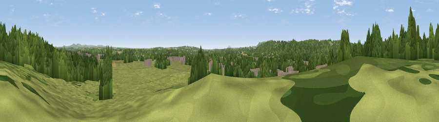

Viewpoint near Birchen Coppice
#30305 in England · top 66% of its area beats it · near Birchen CoppiceThe view, rendered

A 360° render of this exact spot computed from the terrain model, tree cover and land cover — summer colours, afternoon light, calibrated against photographs of famous viewpoints. Real trees, hedges and buildings will differ in detail.
The panorama
Grey silhouette: terrain skyline in each direction (720 bearings, Earth curvature and refraction included). Dashed green: skyline with trees (+15 m) and buildings (+8 m) as obstacles. Blue strip: how far the ground is visible on each bearing.
Where the view opens
Wedge length = distance to the farthest visible ground on that bearing (vegetation-aware). Rings at 10, 25 and 50 km.
What fills the view
42% grassland · 38% woodland · 16% built-up · 4% cropland
Angular shares of the visible panorama (visual magnitude), not map area. Landscape diversity 0.50 (0–1 Shannon).
Key numbers
More beautiful places nearby
The staircase of upgrades: each row has a higher view potential than everything closer. Driving times are estimates from straight-line distance, calibrated against real road routing — check an actual route before setting out.
| Place | Direction | Drive | Score |
|---|---|---|---|
| Viewpoint near Birchen Coppice | NNW · 1 km | ~3 min | 45.0 |
| Stagborough Hill | WSW · 2 km | ~5 min | 63.8 |
| Viewpoint near Ferndale | NNW · 5 km | ~10 min | 71.7 |
| Viewpoint near Abberley | SW · 7 km | ~15 min | 77.5 |
| Viewpoint near Abberley | SW · 8 km | ~16 min | 78.1 |
| Abberley Hill | SW · 8 km | ~16 min | 80.4 |
| Viewpoint near Great Witley | SSW · 10 km | ~20 min | 83.4 |
| Titterstone Clee | WNW · 22 km | ~37 min | 83.8 |
52.35611, -2.28522 · source: osm viewpoint · position refined by local search. Computed location — check access rights before visiting.